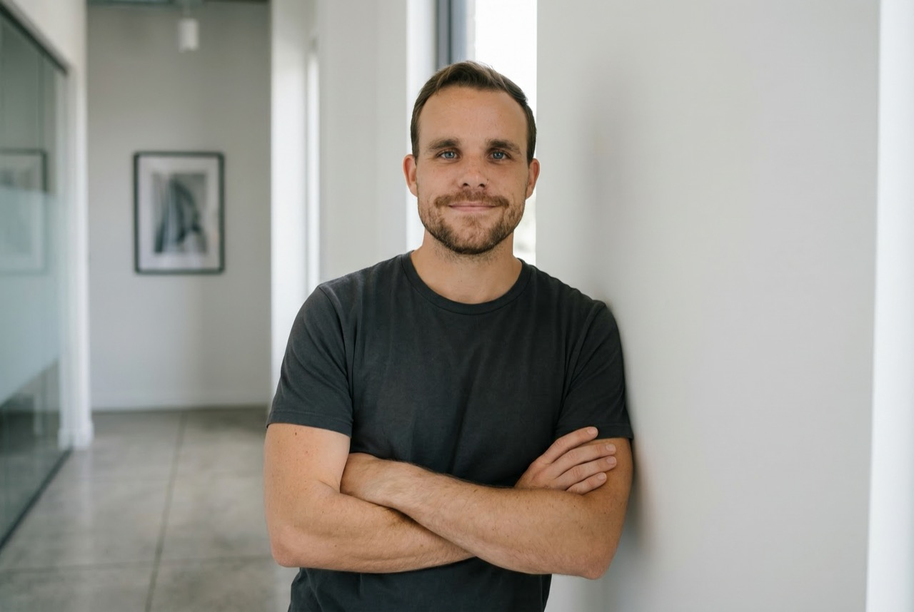

The Story
From stage to server, through 12 countries.
I grew up in Maryland, studied theatre and philosophy at Towson University, and spent my twenties doing what made sense at the time: teaching English in Vietnam, founding a philosophy events company in Hanoi, trekking through Thailand, getting married in Zimbabwe.
I discovered coding at 30 — and it immediately felt like the most creative thing I'd ever done. Not because it was technical. Because it was a new way to build things that matter.
I got serious about AI integration in 2023, when the tools crossed a threshold that made them genuinely useful for building real systems. Since then I've built an AI resume rewriter, an SEO content engine that generates 450 articles in 48 hours, a Chrome extension that saves real estate agents 36 minutes per listing, and two dozen other systems for clients across the US, UK, and Africa.
I'm doing this because I want the financial freedom to put real time into Real Talk Philosophy — a community I believe the world genuinely needs right now. The AI work funds the philosophy work. And the philosophy work makes me better at the AI work.

